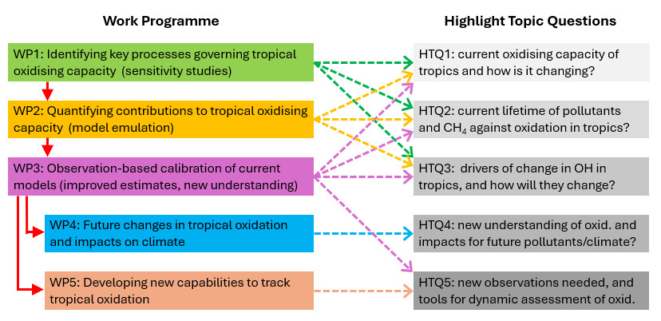
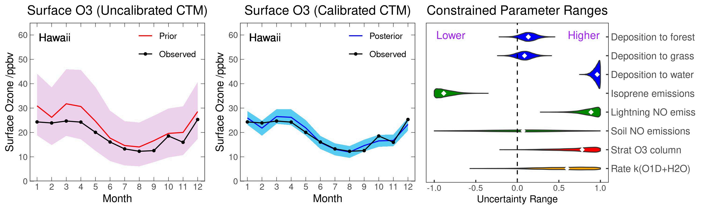

A new collaboration between atmospheric scientists and experts in machine learning. In addition to improved insight into oxidation processes, a key outcome will be development of new statistical methodologies that will benefit the wider atmospheric chemistry and climate communities.


DeTOX brings together atmospheric scientists and experts in machine learning to improve our understanding of tropical atmospheric oxidation and develop new approaches for constraining atmospheric chemistry models.
Investigating the processes that govern tropical oxidising capacity and its variability.
Using observations and statistical methods to constrain atmospheric chemistry models.
Developing new statistical and machine-learning approaches for atmospheric chemistry and climate research.
DeTOX is a collaborative project involving researchers, collaborators and advisers from universities in the UK and internationally.